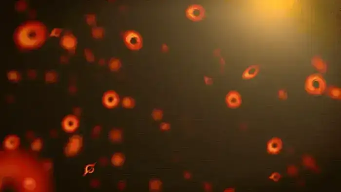
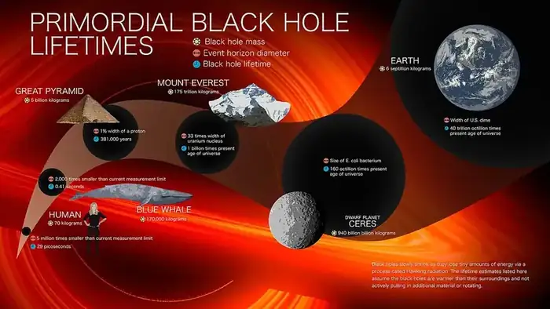

The idea
Stephen Hawking pointed out in 1971 that density fluctuations in the very early universe could collapse directly into black holes, without going through a star. Their masses would depend on when they formed: tiny ones from the earliest moments, asteroid-mass ones later, solar-mass ones later still.
Maps, diagrams and images




The appeal for dark matter is obvious. Black holes interact only gravitationally, they are cold, and they are not invented for the purpose. If enough formed, they solve the missing-mass problem without any new particle.
The constraints
Microlensing. Surveys watching millions of stars for brief brightening events constrain compact objects in the mass range from about a lunar mass to tens of solar masses. The EROS and OGLE results exclude primordial black holes as all of dark matter across much of that range.
The cosmic microwave background. Accreting primordial black holes would inject energy and distort the CMB; the measured spectrum limits how much mass they can carry.
LIGO. Merging black holes of 30 solar masses were a surprise, and the idea that they are primordial has not been excluded — it is one of the few windows still open.
An asteroid-mass window around 10¹⁷ grams survives, because such holes are too small to lens effectively and too faint to accrete visibly. It is the last large hiding place.
If primordial black holes are dark matter, then dark matter is not a new particle and the search programme for WIMPs and axions is looking in the wrong place. That would be the most consequential negative result in the field.
Primordial black holes also give a natural explanation for the black-hole mergers LIGO sees, and for the existence of massive black holes very early in cosmic history — a problem the James Webb Space Telescope has made sharper.
The counterweight is that no positive detection exists. Every claim to date has been either a constraint or a fit, never a measurement of a primordial hole.
The honest status
A serious hypothesis, squeezed at both ends, with one window still open and a clean observational test: find a population of asteroid-mass lenses, or a sub-solar-mass merger, or a statistical signature in the CMB.
The archive labels it 'live debate' rather than 'fringe' because the physics is mainstream and the constraints are real. What is missing is the object.
Sources for this page
- Wikipedia, “Primordial black hole” — formation and constraintsen.wikipedia.org
- Carr & Kühnel, reviews of primordial black holes as dark matterarxiv.org
- OGLE, microlensing constraints on compact dark matterogle.astrouw.edu.pl
- LIGO/Virgo/KAGRA, gravitational-wave catalogueswww.ligo.org
Open resources on this topic
- BookEvolution of Primordial Black Holes in a radiation and phantom energy environment — ['Daniel C. Guariento', 'J. E. Horvath', 'P. S. Custódio', ' · 2007 (Internet Archive, free to read)
- BookPrimordial Black Holes With Variable Gravity — Arbab I. Arbab · 1999 (Internet Archive, free to read)
- BookIlluminating dark matter and primordial black holes with interstellar antiprotons — ['James D. Wells', 'Alexander Moiseev', 'Jonathan F. Ormes'] · 1998 (Internet Archive, free to read)
- PapersOpen-access articles: DOAJ · PubMed Central · Internet Archive Scholar
- BooksPublic-domain and borrowable copies: Open Library · Project Gutenberg · Google Books
Cite this page
Momin, S. (2026). Primordial Black Holes. The Larger World Archive. https://drsamonline.github.io/LARGE_GLOBE/primordial-black-hole.htmlMomin, Sohil. “Primordial Black Holes.” The Larger World Archive, 2026, https://drsamonline.github.io/LARGE_GLOBE/primordial-black-hole.html.Momin, Sohil. “Primordial Black Holes.” The Larger World Archive, 2026. https://drsamonline.github.io/LARGE_GLOBE/primordial-black-hole.html.@misc{primordial2026primordial,
author = {Momin, Sohil},
title = {Primordial Black Holes},
year = {2026},
howpublished = {The Larger World Archive},
url = {https://drsamonline.github.io/LARGE_GLOBE/primordial-black-hole.html},
note = {Last reviewed 20 November 2026}
}Last reviewed 20 November 2026 · Corrections policy · this page is not peer reviewed